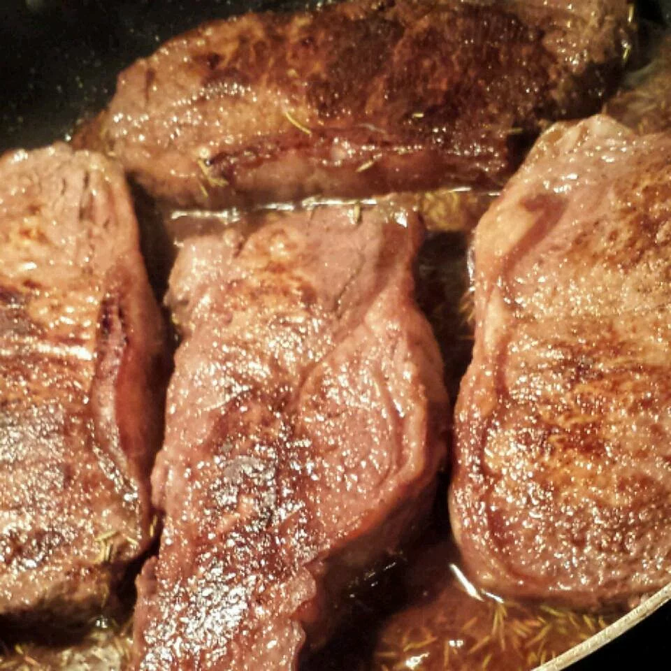

A favorite all over the world, you can hardly go wrong with steak (unless of course you're cooking for vegans. Or serving it well done.). This Argentinian steak dish combines the rich meaty flavors of the steak with a herby red wine and rosemary sauce.

Ingredients
- 1 cup red wine
- 1 teaspoon salt
- 1 sprig fresh rosemary
- 4 New York strip steaks, cut 1-inch thick
Steps
- Combine the red wine, salt and rosemary in a small bowl. Let stand at room temperature for 2 to 3 hours.
- Heat a large griddle or cast-iron skillet over high heat. Place the steaks on the hot pan, and cook for about 8 minutes per side, or to desired degree of doneness. The internal temperature should be at least 145 degrees F (62 degrees C) for medium rare. Pour in the wine mixture, and allow it to boil for a minute. Serve steaks with sauce on a deep platter.
- Enjoy!